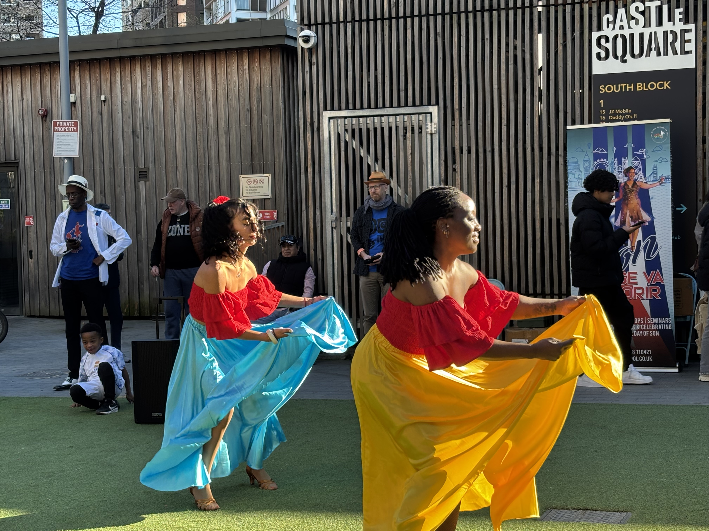
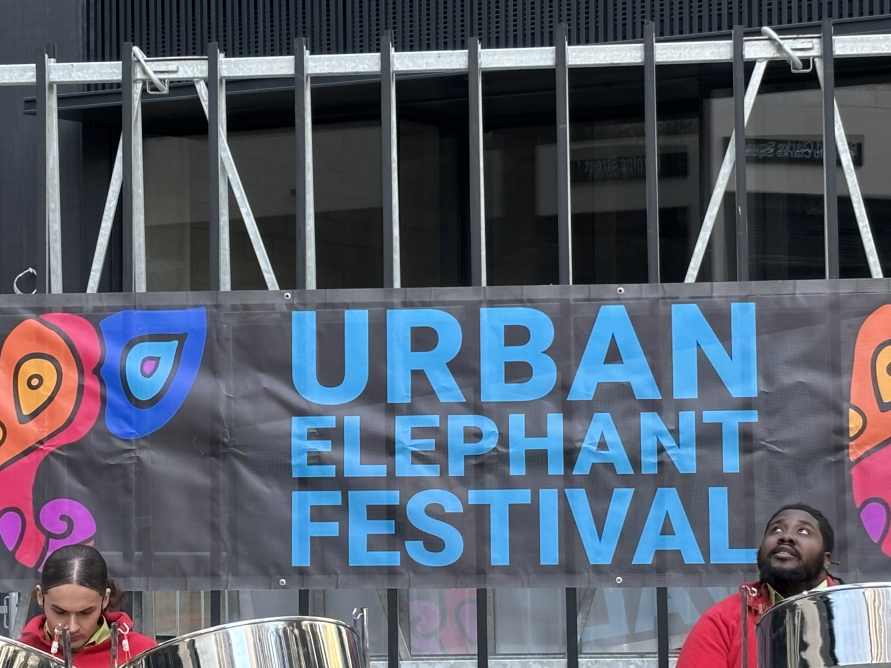
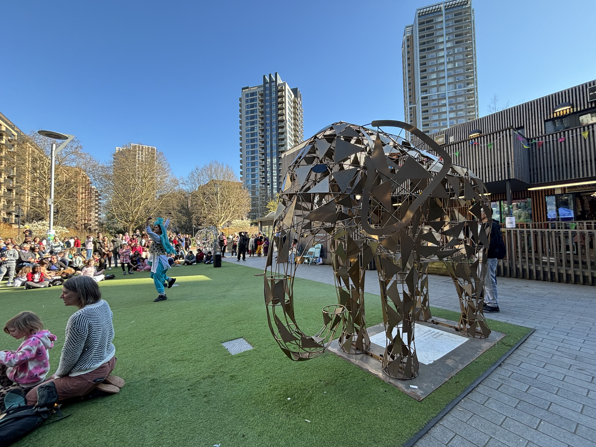

Group member: Arya
1. Project summary
For my live report, I will look at a literature based event, exploring how independent publishers and literary communities experience contemporary reading culture. My narrative will follow the event’s attendees, speakers and authors, capturing the vibrancy of the independent publishing scene and the ways in which readers engage with literature. For a critical angle, I will examine the tension between mainstream literary trends and reflect on accessibility and identity within the industry. My approach will be largely observational and I will combine filming of my surroundings with audio interviews and photographs. I plan to self report and film the environment, as well as a voiceover discussing my experience.
2. Context and background
- A live, in person event held in the Mayfair Library in London
- A celebration of literature, creativity and community.
- Over 40 independent publishers and authors were present
- Opportunity to chat with different authors and to find out more about their work
- The Mayfair Mini Book Fair Website
3. Case studies and inspiration
My main points of inspiration were previous, similar literary events.
Case study 1: The London Book Fair
Link: The London Book Fair

https://www.londonbookfair.co.uk/
Case study 2: Previous Coverage of Similar Events
4. Planning and method
- Format: Horizontal video filmed on my phone, with voiceover recorded using a bluetooth microphone. A tripod will be used to film interview content.
- Location plan: Reporting from the event itself, in person.
- Shot plan: Mostly close shots.
- Interviews: Interviews with attendees. Recorded speech from key speaker. I have received email responses to questions I have asked an author (Sangita Swechcha) who will be attending the event, though as she will be busy on the day she has said she is unfortunately unable to provide an in person interview.
Storyboard Plan
Drawing out the shots I wanted to take.

I created this image myself, to give myself an idea of what I was most interested in capturing before I went to the event.
I found that this allowed me to move forward with filming easily on the day.
Research Questions answered by Sangita Swechcha
I emailed an author attending the event to ask questions ahead of time.

5. Process and drafts
- Journey there and back, entering the library, shots of stalls at the event, interviews with attendees and a speech from a key speaker.
- Edit plan: Editing together the individual clips, adding text layover to briefly say what stage of the journey we are at in that clip, voiceover needs to be added, audio needs to be extracted from some interview clips where the interviewees did not want to be on camera.
- Ethics and safety notes: Consent has been granted by everyone who has been interviewed, though not everyone said they were comfortable being on camera.
6. References and credits
- Luke Sherlock , Visiting the London Book Fair - A Huge Event in the Book World, 2025. Link to YouTube video.
- The London Book Fair, 2026. Link to the official website.
- The Southbank Centre, Mayfair Mini Book Fair, 2026. Description of Mayfair Mini Book Fair
- Written interview answers provided by Sangita Swechcha, 2026,
Group member: Levy
1. Project summary
This live report will document the basketball match between Royal Holloway and King's College taking place in Royal Holloway Sport Centre, on 7th March, 2026. My narrative will capture key moments, highllights, crowd atmosphere, and venue context. Critically, I am not only documenting who wins, I am analyzing how live sports create shared experience. I will balance quatitative data with emotional atmosphere, chants, reactions, and tension shifts. Recent sponsor cuts and suspensions have shown that the sport's infrastructure is unstable. Yet fans still show up. I'm inspired by BBC Sport's structured live commentary approach. There are interviews within the footage.
2. Context and background
- A live, in person event held in Royal Holloway Sport Centre
- A final basketball match between Royal Holloway and King's College
- A big match for the winner of LUSL 2026
- Opportunity to feel the pressure in an university match
- Better understanding about British Basketball
- The audience reaction about the BBF suspension from FIBA
- The Guardian - BBF suspension
3. Case studies and inspiration
My main points of inspiration were from youtube videos and articles
Case study 1: The Guardian Sport 2025
Link: The BBF Suspension
Case study 2: Previous Coverage of Similar Events
"
4. Planning and method
- Format: Horizontal and Vertical video filmed on my phone, with voiceover recorded using a bluetooth microphone.
- Location plan: Reporting from the event itself, in person.
- Shot plan: close shots, big scale shots, close-up shots, ...
- Interviews: Interviews with audiences and team captain. Recorded the game, the environment, the crowd, atmospher,etc. I have reached out to Royal Holloway's Mens Baketball Team for an individual interview and he agreed
Storyboard Plan
Drawing out the shots I wanted to take.

I drew this image myself, to give myself an idea of what I'm going to film, what angles, what contents before I went to the event.
I found that this allowed me to move forward with filming easily on the day.
Interview Questions for the Team Captain
I talked to the captain about the questions ahead of time for his preparation time.
5. Process and drafts
- I travel to Royal Holloway's sport centre, shots from the bench, interviews with captain and audiences and a quick introduction about the report.
- Edit plan: Editing the individual clips, reforming the structure of the shots, adding references to the report for case study and evidences, voiceover needs to be added, audio (from the original video) was edited.
- Ethics and safety notes: Consent has been granted by everyone who has been interviewed, everyone were comfortable being on camera.
6. References and credits
- Asia and Aubre_ game vlog + grwm Link to YouTube video.
- The Guardian Link to the official website.
- British Basketball Link to the official website
- Fiba suspends British Basketball Federation Link to the official website.
Group member: Amina
1. Project Summary
My live report will be documenting the Urban Elephant Festival 2026, a community-led festival showing the cultural diversity Elephant and Castle is known and loved for. As a resident of Southwark who attended primary school in Walworth and then secondary school in Elephant and Castle, this specific event is personally important to me as it is symbolic of the cultural identity of an area I grew up in, an area which also happens to be undergoing large-scale redevelopment.
The redevelopment of Elephant and Castle has been a polarising topic. There are valid concerns of its negative effects on the established communities and their cultural presence such as gentrification and displacement. My live report directly tackles this in documenting this festival as the ideal place for the preservation and public expression of local culture despite socioeconomic adversities and challenges.
In my report, I capture a wide range of acts from an actor’s play to speeches from local leaders and many cultural dance forms. Through a purely observational news reading approach that focuses on live documentation with a reflective and commentary-style voiceover; I aim to highlight the cultural harmony of the area with one shared urban space, especially for BAME communities. This is something in reinforce through my editing style with visual sequences that transition between differing cultural dances in the same area (emphasising that cultural harmony)



2. Context and Background
- A live, in-person event held in Elephant and Castle, South-East London
- A free annual festival that celebrates art, music, dance and cultural diversity
- The event takes place across 4 spaces within the local area of Elephant and Castle
- The free incentive (no economic barriers) and community-led foundation makes it very accessible to a broad demographic
- This is crucial as gentrification usually means cultural hubs and third spaces are depleted and/or commercialised. In turn, the festival is not only celebratory but a form of sociocultural and inevitably political, resistance
- The festival is reflective of the area’s historical multicultural identity
3. Planning, Production and Post-Production
I decided to prepare for filming at the event by researching on the official Urban Elephant Festival website. It provided detail on the specific performance times and locations throughout the event. Unfortunately I could not film every single act but using the timetable, I was able to select which performances I wanted to capture to best represent the cultural diversity that the festival had to offer, and simultaneously allow for a smooth live filming schedule (time, space, movement, etc.)
To document the event, I recorded solely on my phone camera (in landscape) as it would be the most efficient in a busy area. I made sure to capture the planned performances but also some spontaneous moments via images and a broad range of shot types (wide, medium, close-ups, aerial, etc.) to capture different details but to also give me creative freedom in the editing stage (considering both quantity and quality). This did however make the editing quite lengthy as I had to get rid of a lot of footage to fit the required duration.
I edited my footage with DaVinci Resolve, using it to sequence and cut my footage and then integrate my voiceover and some music. I also used Adobe’s podcast editor to refine my audio (e.g., getting rid of muffled sound and background noises in my voice recordings)
4. Case Studies, Inspiration and Credits
I decided on my documentation style by looking at existing documentation of similar annual, inner-city cultural events in London. In my opinion the most outstanding is Notting Hill Carnival.
Video reports on Notting Hill Carnival visualise the immersive atmosphere of the festival via swift visual sequencing, and not just through speaking but through footage of how the audiences and performers interact. This directly influenced my filming style.
Many short-form examples online utilise the casual chronological vlog-style approach. On the contrary, I chose to focus on observation and reflection in a more journalistic approach instead of leading the report as a presenter/interviewer. Although it was restrictive, I deliberately chose not to include interviews to prioritise the atmosphere instead of focusing on personal narratives.
Here the case study examples:
- LADmob - Notting Hill Carnival watch here
- Sky News - Notting Hill Carnival watch here
- Urban Elephant Festival 2025 watch here